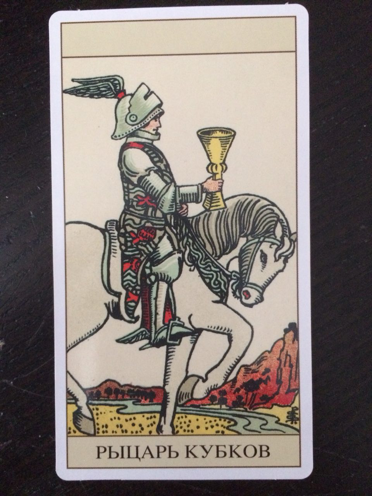
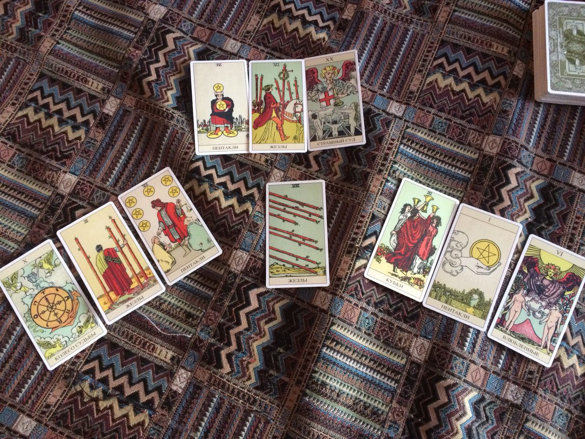

В предвкушении чувств.
Написал АВ с эфемеридами. Дал ЦУ что дописать для его книги. Построила астрологическую карту на момент отправки письма Венера в Тельце на МЦ делает трин к Марсу ))
я сделала расклад самопроизвольный:

верхняя тройка - то как у нас буду складываться взаимное сотруднечество
правая тройка - что он думает относительно меня, как он ко мне относится, заинтересован ли, как будет развиваться его отношение ко мне в сотрудничестве?
левя тройка - что я думаю, какое будет мое состояние если с ним буду сотрудничать
Центральная карта - что мне сделать чтобы сотруднечество завязалось? 8Ж (надо что-то быстро решить)
Хотела записать видео про брак. Но решила, как то подключить его. Родилась "Сбежавшая невеста", прислала ему на рецензию. Заодно чтобы понятно было, что я играю не в одни ворота, а мне тоже хотят помочь.